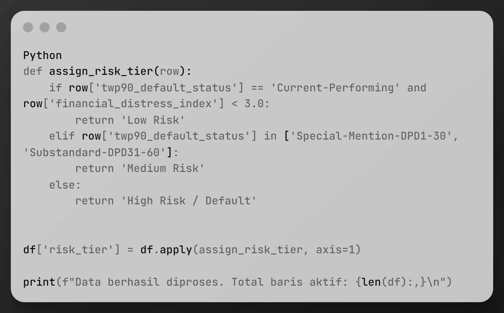
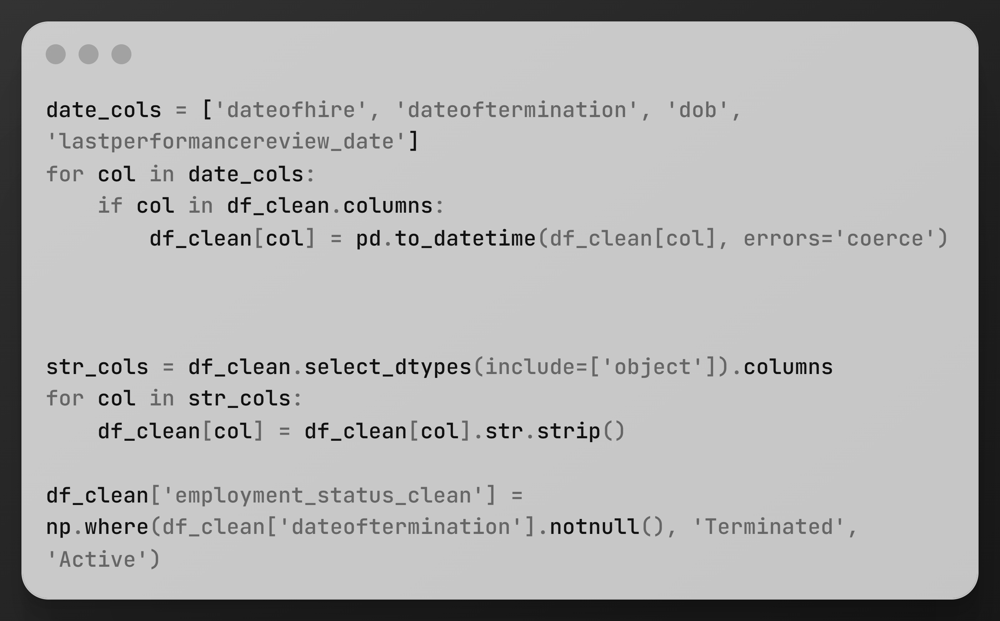
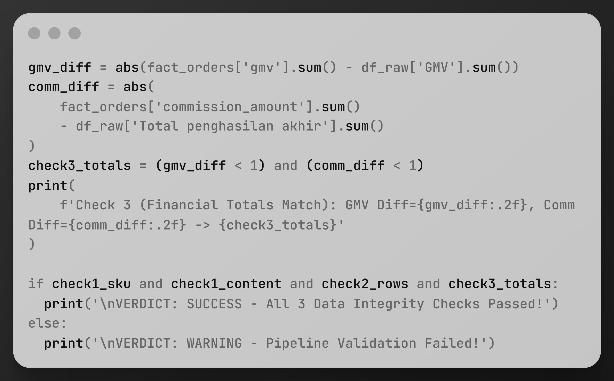

Turning messy data into decision-ready business solutions.
Data Analyst based in Bandung leveraging deep expertise in SQL, Python, Tableau, and Microsoft Excel. Proven track record of executing end-to-end data pipelines, developing dynamic KPI dashboards, and deploying applied predictive models. Adept at extracting large scale datasets, conducting rigorous exploratory data analysis, and translating commercial marketing and live commerce metrics into scalable growth strategies.
Technical & Analytical Stack Tools, modeling frameworks, and operational domain.
Programming & Data Prep
Analytics & Modeling
Visualization & Domain Ops
Data Analytics Projects End-to-end pipelines, risk scoring, and executive BI.



Experience & Education Commercial execution, trust & safety, and analytics training.
Host Live & Marketing Staff
Hosted live commerce sessions driving high audience engagement and 2,000+ checkouts in a single session. Tracked and analyzed daily sales, traffic, and campaign performance data to evaluate market trends, optimize consumer targeting, and support internal operational strategy.
Marketing Officer
Planned and managed digital marketing campaigns with continuous performance tracking aligned to organizational growth goals. Monitored operational and marketing datasets, authored periodic performance reports, and streamlined cross-functional workflows.
Content Moderator
Executed high-accuracy data classification, pattern recognition, and risk assessment across user-generated content to maintain strict platform policy compliance. Investigated complex operational edge cases to elevate quality standards.
Data Analyst & Business Intelligence Bootcamp
Intensive practical training in SQL, Python, statistical modeling, and end-to-end BI dashboarding.
Bachelor Degree in French Language & Literature
Vice President of Cercle des Étudiants en Français. 1st Place National Announcing Competition E-Radio Unair (2021) & 2nd Place National Podcast Competition KBR.id (2022).